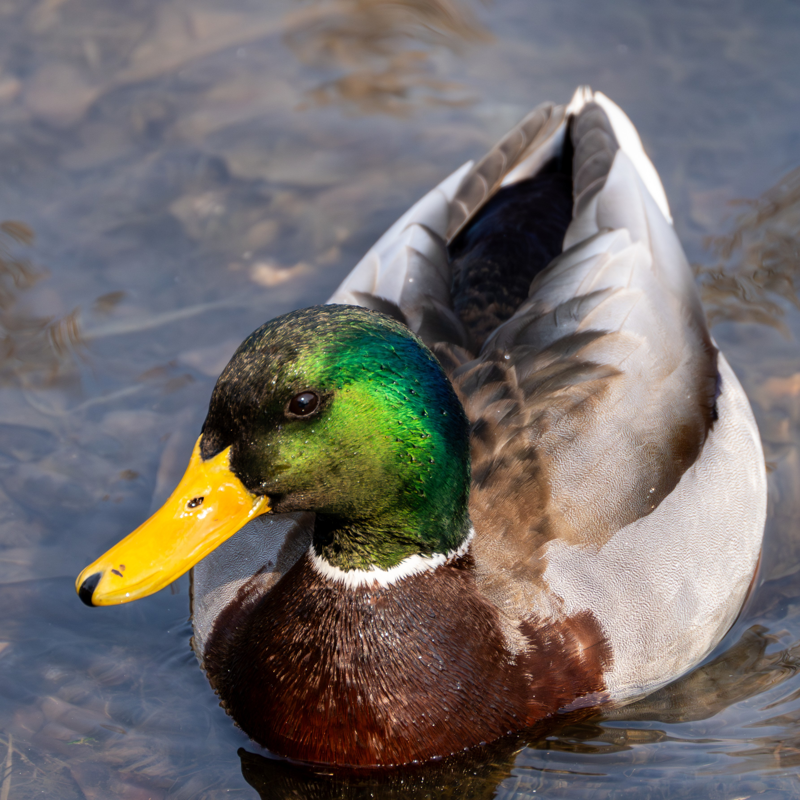

绿头鸭
绿头鸭是最常见的野鸭之一，雄鸟头部呈金属绿色，颈部有白色环纹。广泛分布于北半球，是许多家鸭的祖先。栖息于淡水湖泊、河流和沼泽地带，杂食性，以水生植物、种子和小型水生动物为食。

白鹭
白鹭是一种中型涉禽，全身羽毛洁白，喙和腿黑色，趾黄色。常见于湿地、稻田和浅水区域。以小鱼、蛙类、昆虫等为食。繁殖期头后会长出细长的饰羽，姿态优雅，常被用作环境质量的指示物种。

黑天鹅
黑天鹅原产于澳大利亚，全身羽毛黑色，喙红色并有白色横纹。体型优美，颈部长而弯曲。主要栖息于淡水湖泊和沼泽地带。以水生植物和水草为食。黑天鹅实行一夫一妻制，夫妻关系通常维持终生。